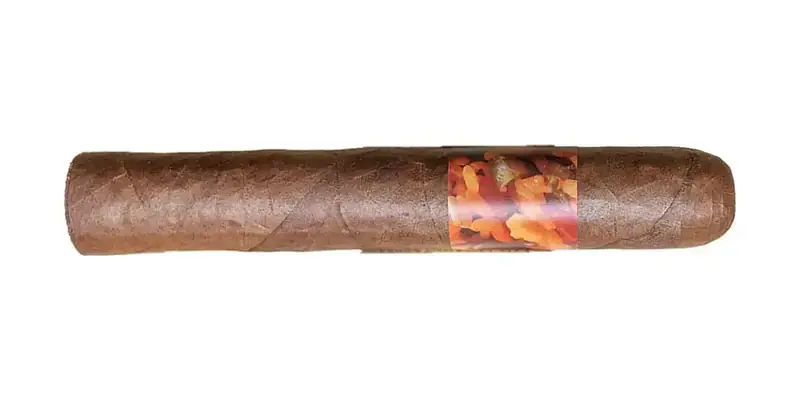

Mamposteao'
By El Club del Turro · Río Grande, Puerto Rico
Wrapper, binder and filler from Puerto Rico. Notes of lemon, smoked wood and pepper.
- Wrapper: Puerto Rican short filler
- Strength: Medium
- Vitolas: Robusto 5 x 50
Sources: 1
See Mamposteao' in the app, rate it and save it to Mi Hoja.